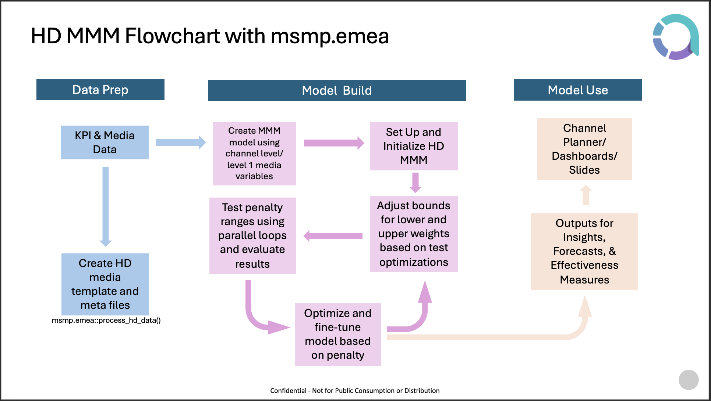
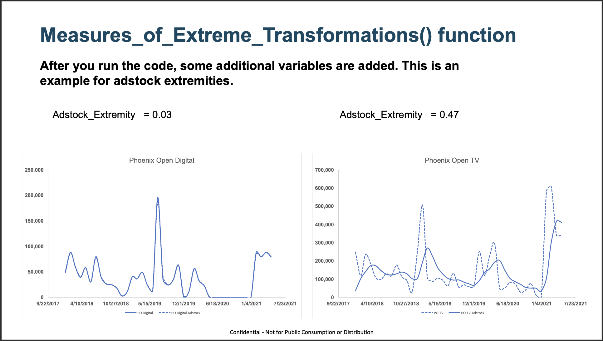
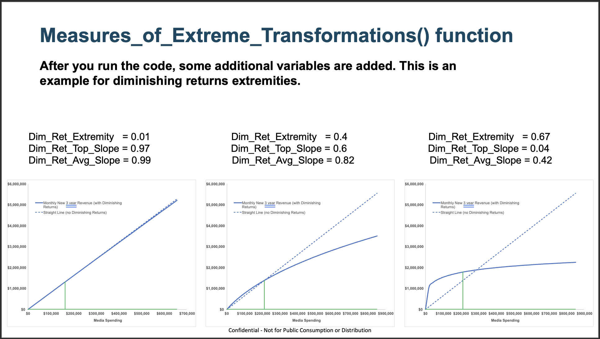

HD MMM Workflow¶
This document serves as a guide to help users run HD MMM projects using the msmp.emea package. This document and the codebase are maintained by the Annalect EMEA team, feel free to reach out to the team on any questions you have.
The flowchart below outlines a high level overview of how a HD project will look like.

Pre-requisites¶
Before going into the project setup, there are a few pre-requisites that we would like to outline:
-
Have the latest package version of
msmp.emeainstalled. Link to the repo can be found here: msmp.emea -
An MMM model. HD is a build on top of MMM so it requires an already established MMM model. Do note that the codebase requires the user to create the MMM models within the
msmp.emeaenvironment. If your MMM models are built using another solution, do reach out to a member of the team to discuss the best way forward. -
Media data splits. Having good data is central to a HD model's success. HD integrates this information by incorporating two additional files on top of the already established MMM model - HD template and HD meta files (See examples below). Both files can be created from the media data using the
msmp.emea::process_hd_data()function within the package.
| Example of a HD template table | Example of a HD meta table | |||||||||||||||||||||||||||||||||||||
|---|---|---|---|---|---|---|---|---|---|---|---|---|---|---|---|---|---|---|---|---|---|---|---|---|---|---|---|---|---|---|---|---|---|---|---|---|---|---|
|
|
Project Setup¶
In this section, we will walk through the setup of a HD model using the RMarkdown template in detail. This guide will cover each step in the Rmd template and explain what it is trying to achieve.
-
Initial HD project setup
- Intialise the Rmd file
- With the
msmp.emeapackage installed, you should be able to see a HD MMM RMarkdown template. Initialise this file within your project folder. Save this file in the same location as your MMM model Rmd. You can create a template from RStudio by following the instruction below. -
File -> New File -> R Markdown... -> From Template -> HD-mmm -> Ok
- With the
- Define Yaml Parameters
- Start by defining Yaml parameters at the top of the file. Ensure all parameters are accurate, particularly
mmm_model_id, which must match the corresponding entry in thetable_of_model_ids.csv -
1.Set Date Ranges
--- title: "Project Title" author: "Your name" date: "Date" params: model_client: "client_name" model_product: "product1" model_region: "country" model_year: "2023" model_version: "1.0" model_kpi: "my_kpi" model_panel: FALSE mmm_model_id: "Your MMM model ID" hd_model_version: "v_1.0" --- - Define the transform and modelling date ranges of your HD model. These date ranges will need to be the same as your MMM model as HD is very sensitive to this.
- For example, you can have a case where your transform start date is a month earlier than your actual model start date to take into account for media adstocks.
- Start by defining Yaml parameters at the top of the file. Ensure all parameters are accurate, particularly
- Intialise the Rmd file
-
Setting Up and Loading in Data
-
Run Initialization
- Execute the
hd_mmm_init()function to generate the folder structure required for the project. - Based on the parameters in the Yaml file, it will create a folder called
07_hd_mmmat{model_client}_{model_year}/{model_region}_{model_product}_{model_kpi}/{model_version}
- Execute the
-
Populate the required files for the project
- HD Variables: The
07_hd_mmm/01_hd_settings/01_input_hd_variablesfolder will be auto-populated with the Variables.csv file from the MMM model output folder. The user need only check the csv file such that all HD media variables have the labels at "AggregateVariable" column set to "Media" and "Simulate" column set to "Y". - HD Template: User will need to copy the hd template csv file into the folder
07_hd_mmm/01_hd_settings/02_input_hd_template. - HD Meta: User will need to copy the hd meta csv file into the folder
07_hd_mmm/01_hd_settings/03_input_meta. - HD Data (Optional): If HD level data is already supplied at the MMM stage, there is nothing to do here. Otherwise, user will need to populate the folder
07_hd_mmm/01_hd_settings/04_input_hd_datawith the relevant csv files.
- HD Variables: The
-
Re-run the initialisation function
- Once the previous step has been completed. Re-run the
hd_mmm_init()function. - If successful, you should be able to see 3 new files in the
07_hd_mmm/01_hd_settingsfolder.{mmm_model_id}_HDModObj.RData: A copy of your model object{mmm_model_id}_HDVariables.csv: HD variables csv file, it contains all the information on variables in the model and any HD level variables{mmm_model_id}_Meta.csv: HD meta file
- Once the previous step has been completed. Re-run the
-
-
Setup HD Variables, Meta and Weights file
-
At this stage, we should already have most of the HD files setup. The crucial step in this chunk is to make sure that the
PreWeightsfor each HD variables are populated correctly. To facilitate this, user should use theupdate_hd_preweights()function to update the preweights accordingly. For any media variables that cannot be auto-populated by the function, the user can use thevarsandpreweightsargument to populate them manually. -
The key thing to keep in mind is that all HD media variables should be in the same scale (i.e. all HD variables are impressions metric or all are in clicks metrics or roughly in the same ballpark in terms of representative size) due to the weight optimization algorithm which rescales these variables.
-
If this chunk ran successfully, you should be able to see a new file in the
07_hd_mmm/01_hd_settingsfolder.{mmm_model_id}_Weights.csv: HD weights file, this file is where user will provide information on the HD weights (This file will open once the chunk runs successfully)
-
Next step for the user will be to update the Weights file
- User will need to update the
Lower_WeightandUpper_Weightcolumns which corresponds to your HD variables. A common initial bounds to use is [0.7,1.3]. (An example is shown below) -
Here is a brief explanation of what each column of the file means:
- Group & Value: These column corresponds to the group and group names of all variables from the meta file.
Group1corresponds to your MMM level variables whereas the subsequent groupsGroup2,Group3, etc. corresponds to the HD level groupings. - Weight: Weight assigned to the group, bigger number means bigger importance. All weights are initialised to be 1. Weight of 1s for all groups will give you the same results as your MMM model.
- Lower_Weight & Upper_Weight: Lower and upper bound of the weights that you allow the algorithm to explore. You should only set Lower and Upper weights for HD groups, i.e. all
Group1,Intercept,Dependent, andBasevalues should be fixed at 1. - Uncontrolled_Weight: You can ignore this column as this will be populated when we run the weights optimization algorithm.
- Example of a weights table:
Group Value Weight Lower_Weight Upper_Weight Uncontrolled_Weight Group1 Intercept1 1 1 1 1 Group1 Base1 1 1 1 1 Group1 Dependent1 1 1 1 1 Group1 Display 1 1 1 1 Group1 YouTube 1 1 1 1 Group2 Direct 1 0.7 1.3 1 Group2 Programmatic 1 0.7 1.3 1 Group3 Home 1 0.7 1.3 1 Group3 Technology 1 0.7 1.3 1 Group3 Fashion 1 0.7 1.3 1 - Group & Value: These column corresponds to the group and group names of all variables from the meta file.
- User will need to update the
-
-
Update the weights file and run a series of pre-transformation checks
- In this chunk, the functions will run a series of checks on the HD spec and control files (meta and weights file) to detect any errors or flag any warnings.
-
Run Checks and Create Variable Transformations + Weightings for HD MMM
- At this stage we are almost done with the HD setups and will be able to run the optimization algorithm soon. One last step that we need to do is to check whether we are able to recreate the MMM model outputs from our HD setup. This is an important step as it gives us confidence that we have set HD up for success.
- Let's go through some of the key functions in this chunk:
HD_Variable_Tranformations(): HD version of Transform()Distribute_Weights(): Apply weights from the weights file to the HD variables. At this stage all weights should be 1 (Unless the user has provided a different set of weights to initalise HD)Measures_of_Extreme_Transformations(): Gives information on how shape of the adstocks and diminishing returns transformations. An example is shown below
Example for adstock extremity. Example for DR extremity. hd_update_priors(): Updates the priors of the model as the HD variables are in a different scale from the MMM modelDecomposition_Levels(): HD version of Decomp()
- This chunk should run fine without needing any edits to the code. Once the chunk runs, it should create two comparison tables - a decomposition table comparison and a coefficients table comparison.
- Decompoistion table comparison: This is what is important. We should see minimal differences between the two decomps.
- Coefficient table comparison: We can see that the HD model's coefficients for media variables look different from their MMM counterpart. This is because of the scaling that is applied to those variables which will be important in the optimization algorithm.
-
Weights Optimization There are two stages when it comes to optimization of HD weights. First, the algorithm will search for the best possible weights within the bounds specified. After that, a fine tuning algorithm will be run to penalize weights that are not contributing significantly. The idea behind penalizing weights is similar to that of a Lasso or Ridge regression. Similar to how a penalized coefficient will be pulled towards 0, in this case, a penalized weight will be pulled back towards 1. We have broken down this stage into 3 sections: (1) Establishing a rough range the optimal penalty might sit in, (2) Do a grid search of the penalty range, (3) Run the optimization algorithm with the optimal penalty value
-
Uncontrolled weights and penalty range
- In this chunk, we are looking to understand the range of penalty values that we should test for the model. When we run the optimization algorithm with
UCOptset to TRUE, we can see a suggested penalty range printed in the console.
Set the penalty for optimization somewhere between 65.2 and 2693.4 for this data. With a penalty of 271.9 preventing only the worst over-fitting but has very high R-Squared. A penalty of 753.8 a good average amount of control. And a penalty of 936.5 allows only the most statistically significant weights.- Besides that, the uncontrolled weights will also give us an idea of whether the bounds we set for our groups are sufficient. For example, if the uncontrolled weight of a group goes beyond its upper or lower bound, it is advised to widen the bound.
- In this chunk, we are looking to understand the range of penalty values that we should test for the model. When we run the optimization algorithm with
-
Testing penalty values
- Once we have the initial penalty values that we can be testing, we can input them into the
penalty_valsvector and run the chunk to test out these values. The chunk willl take a while to run, and once finished, it will create a folder calledhd_penalty_loop_outputsin the main folder and output the results in an excel file. We will talk more about analysing this output in the next section. - This is an iterative process, which means we will need to run this chunk multiple times until we find a good penalty value that works well with the model. For example, I have tested penalty values [10, 20, 50, 75, 100] and have found that 20 seems to be giving me the most optimal result. Next, I will test the penalty values [15, 18, 21, 25, 30] to determine which values in the vicinity of 20 gives me a better result. As you can see, it can take quite a few tries to get to our final penalty value.
- Do note that optimal penalty value may vary from one group to another, so it is important to balance this as we can only have one penalty value in the end.
- Once we have the initial penalty values that we can be testing, we can input them into the
-
Run optimization with optimal penalty value
- After testing all the penalty values and have found the one that is suitable for our model, input that value into the weights optimization function to create our final output.
- With this, we should have everything we need - Final HD Weights, HD Decomp table, and HD Response Curves. All that we need to do now is save the output.
-
Analyzing HD Outputs¶
This section aims to breakdown the excel file output generated from the penalties testing stage. In the file, you will see 4 sheets:
-
RanWeights
- As you can see, this sheet resembles the weights file quite a bit, with a few additional columns. It displays the random weights that we get from the optimization algorithm. If you recall, the optimization algorithm runs in two stages, it first gets the best weight in the range, then it refines the weights using the penalty value. Random weights are the weights we get from the first stage of the optimization (best weights in the range). Therefore, these weights are optimized without the use of penalty values. You can think of these weights as weights we get from a penalty of 0.
- Purpose: To understand whether the algorithm is giving us consistent results across each run. This is very important as it tells us that the algorithm has converged. However, when we see inconsistencies between runs, the user have to dive into why this is the case. There are a few explanation as to why the weights may not have converged:
- Size of the group is too small (inidicated by the size column). When the size is too small, the choice of giving it a weight close to the upper bound or the lower bound yields insignificant change to the model. In this case, user can choose not to weight them at all (set lower and upper bounds to 1).
- Run time is too short. When the search range is large or there are many groups in a level, the search space is big and the algorithm hasn't had the chance to explore a good chunk of the parameter space. In this case, it will be wise to increase the run time.
- In cases where the groups are very big and relationship between groups are complex. It is sufficient to observe whether the weights are telling a consistent story, e.g. Group X in Level 2 consistently outperforms the other groups in the same level although it takes on different values in each run.
-
Weights
- This sheet is very similar to the RanWeights sheet, with a slight difference whereby instead of random weights, these weights are the fine tuned version of random weights (weights we get from the second stage of the optimization algorithm). Therefore, these weights are heavily influenced by the penalty values.
- Purpose: Look for consistencies across different runs within the same penalty value. Choosing the best penalty value will be up to the analyst's judgement. However, do keep in mind that the weights should be reasonable and tell us a meaningful story. (e.g., A set of weights of 1s as our output isn't telling us anything new as these are the default results we get from our MMM model)
-
Effect
- You can think of effect as a value showing how significant the group is at increasing the model's performance when it's weight is increased/ decreased by a small step in either direction. The bigger the value, the more significant the group is.
-
Decomp
- As looking at the decomposition table is an important factor while deciding on penalty values, its corresponding decomp table of each weights optimization run is saved here so the user can always refer to it when needed.